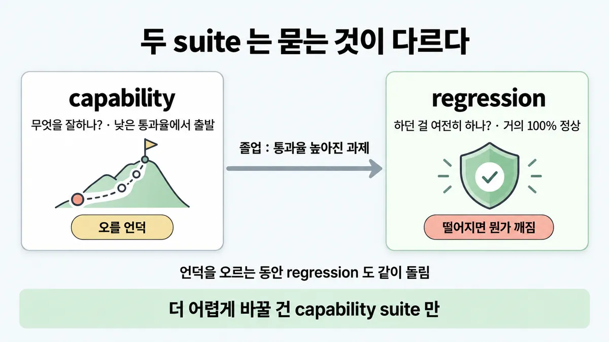
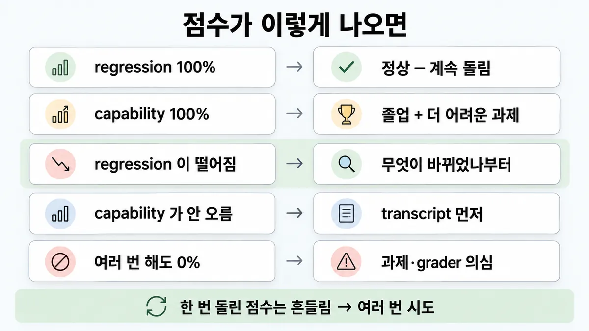
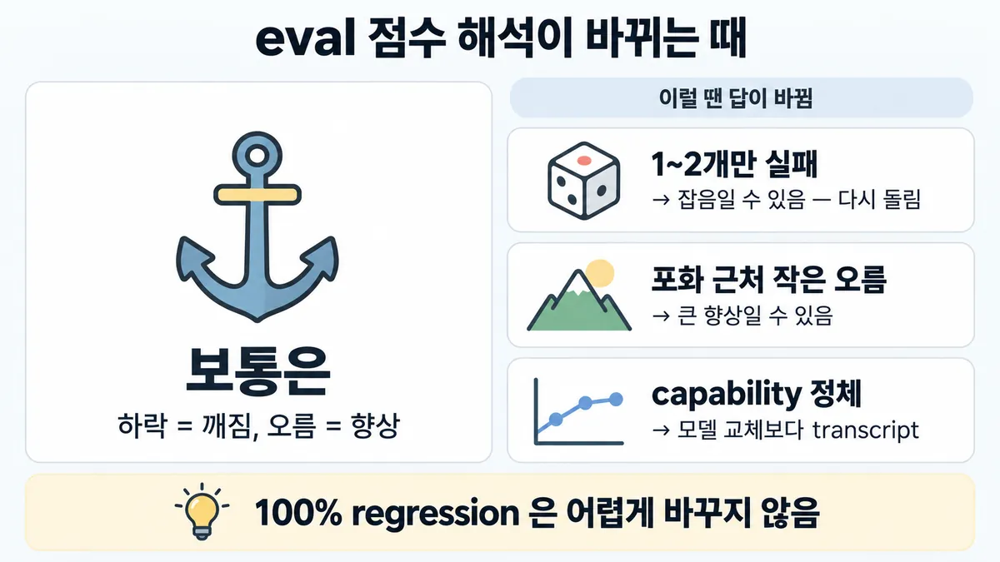

◆ capability eval vs regression eval
표시가 없는 문장은 공식 문서에서 확인한 내용이에요. 다른 표시는 읽는 법
왜 배우나 — 시험이 요구하는 것
시험 목표 4.3 A/B 테스트와 반복 개선 · D4 평가 16%Conduct A/B testing and iterative improvements
이 개념으로 푸는 판단 (할 수 있어야 하는 것)
- 4.3② 회귀 suite 가 100% 통과 — 더 어렵게 바꿀까? — 능력(capability) eval 과 회귀(regression) eval 을 다르게 운영
- 4.2② eval 셋, 수백 개가 모일 때까지 기다릴까? — 첫 평가 데이터셋 만들기 (크기·출처·균형·과제 품질)
- 4.3③ 프롬프트 한 줄·모델 버전을 바꿨다 — 무엇을 다시 돌리나? — 반복 개선 루프 (변경 = 시스템 변경, eval 통과 뒤 배포)
한눈에


ELI5
키 재기 벽과 체온계를 떠올려 보세요.
- 키 재기 벽은 아직 못 닿은 높은 곳에 눈금이 있어야 쓸모가 있어요.
- 체온계는 늘 "정상"이 나오는 게 좋은 거예요. 갑자기 높으면 어디가 아픈 거죠.
- 벽 꼭대기까지 다 자라면, 그 벽은 체온계처럼 "여전히 괜찮나" 보는 데 써요.
- 이 쪽은 "100% 가 나왔을 때 좋은 건지 나쁜 건지" 가르는 법이에요.
개념 설명
원리
두 suite 는 묻는 질문이 다름
- capability(능력, "quality") eval = "이 에이전트가 무엇을 잘하나?" → 에이전트가 힘들어하는 과제를 겨눠 낮은 통과율에서 출발. 오를 언덕(hill to climb — 통과율을 올려 갈 여지).
- regression(회귀) eval = "하던 걸 여전히 다 하나?" → 거의 100% 가 정상. 점수가 떨어짐 = 뭔가 깨짐 = 뒷걸음 신호.
그래서 같은 100% 가 뜻이 반대
- regression 100% = 건강함. 계속 돌림.
- capability 100% = 포화(saturation). 뒷걸음(regression)은 잡아 주지만 더 나아졌는지는 알려 주지 않음.
졸업(graduate)
- 출시·최적화 뒤 통과율이 높아진 capability 과제는 regression suite 로 옮겨 계속 돌림 → drift 를 잡음.
- 같은 과제가 "할 수는 있나?"에서 "여전히 믿고 할 수 있나?"로 뜻이 바뀜.
- capability 쪽에는 더 어려운 과제·새 eval 을 채움(Qodo 는 한 번에 푸는 코딩 eval 이 긴 과제의 향상을 못 잡자 새 에이전트 eval 틀을 만듦).
포화가 속이는 방식
- 포화에 가까우면 가장 어려운 과제만 남아 진척이 느려 보임 → 큰 capability 향상이 작은 점수 오름으로 보임.
점수를 그대로 믿지 않음
- 점수가 안 오를 때 : 에이전트 탓인지 eval 탓(채점 버그·모호한 과제·하네스 제약)인지 transcript 를 읽어 먼저 확인.
- 실례 : CORE-Bench 에서 Opus 4.5 가 처음 42% → 채점이 "96.124991…" 를 기대해 "96.12" 를 틀림 처리하는 등 문제를 고친 뒤 95%.
두 suite 를 같이 돌림
- capability 언덕을 오르는 동안 regression 도 같이 → 바꾼 것이 다른 곳을 깨지 않았는지.
- Descript 는 품질 벤치마크용·regression 용 두 suite 를 따로 정기적으로 돌림.
핵심 질문 두 개
- 이 suite 는 "잘하나"를 묻나, "여전히 하나"를 묻나?
- 점수 변화가 에이전트 때문인가, eval 때문인가?
규칙과 판단


갈림길
100% 가 나왔다 [4.3②]
정상 — 계속 돌림
거의 100% 가 정상
졸업 + 더 어려운 과제
통과율 높아진 capability(능력) 과제 → regression(회귀) suite 로. capability 쪽엔 더 어려운 과제·새 eval
점수가 이상하다 [4.3②]
뭔가 깨짐
무엇이 바뀌었나부터 (■ 변경부터 묻는 진단)
transcript 먼저
에이전트 탓인지 eval 탓인지 transcript 로 확인
과제·grader 의심
0% pass@100 은 대개 과제 자체의 결함 (■ 첫 eval 셋 만들기)
작다고 단정 말기
포화 가까우면 큰 향상이 작은 점수 오름으로 보임
여러 번 시도
한 번 돌린 점수는 흔들림 → 여러 번 시도(trial) (◆ pass@k vs pass^k)
흐름
그림 속 이름·금액·시간·토큰 수는 예시예요. 공식 한도·동작은 카드 본문 값이 기준.
장면 글로 보기
칸 : 변경 → capability suite → regression suite
규칙 (capability suite) : 낮은 통과율에서 출발 — 오를 언덕(통과율을 올려 갈 여지)
규칙 (regression suite) : 거의 100% 가 정상 · 떨어지면 뭔가 깨짐
질문 : 100% 는 어느 suite 에서 좋은 소식일까?
① 언덕 오르고 졸업 ✓
- 시작 : 변경 — 쪽지 : 프롬프트 v7 / + 교환 규정 3단계 안내
- 출발 : capability suite : 낮은 통과율에서 출발 — 쪽지 : 교환 과제 20개 / v6 : 6/20 (30%)
- 돌림 : 변경 → capability suite : 언덕을 오르는 중 — 쪽지 : v7 : 19/20 (95%)
- 돌림 : 변경 → regression suite : 다른 곳이 안 깨졌나 — 쪽지 : 환불·배송 과제 60개 / v7 : 60/60
- 졸업 : capability suite → regression suite : 통과율 높아진 과제 → regression 으로 — 쪽지 : 교환 과제 20개 합류 / regression suite 80개
- 끝 : "할 수 있나?" 가 "여전히 믿고 할 수 있나?" 로 바뀜
② regression 이 떨어짐 ≠
- 시작 : 변경 — 쪽지 : 프롬프트 v8 / 말투 문장 수정
- 돌림 : 변경 → regression suite : 거의 100% 가 정상인데 — 쪽지 : v7 : 80/80 / v8 : 71/80 (89%)
- 떨어짐 : regression suite : 떨어지면 뭔가 깨짐 — 쪽지 : 실패 9개 : 전부 환불 과제
- 끝 : regression 이 떨어지면 뭔가 깨짐 — 무엇이 바뀌었나부터
③ capability 100% 인데 그대로 ≠
- 시작 : 변경 — 쪽지 : 프롬프트 v9
- 돌림 : 변경 → capability suite : 이미 100% — 쪽지 : v8 : 20/20 / v9 : 20/20
- 멈춤 : capability suite : 개선 신호 없음 — 쪽지 : v9 가 나아졌나? / 점수로는 알 수 없음
- 끝 : 100% 인 capability suite 는 개선 신호가 없음 → regression 으로 졸업, capability 쪽엔 더 어려운 과제·새 eval
규칙 원문 갈림 기준 점수 읽기 (갈림길로 그린 규칙)
갈림 기준
이 suite 가 무엇을 묻나가 먼저
- capability("quality") eval = "무엇을 잘하나?" 낮은 통과율에서 출발 — 오를 언덕. 에이전트가 힘들어하는 과제를 겨눔
- regression eval = "하던 걸 여전히 하나?" 거의 100% 가 정상. 떨어지면 뭔가 깨짐 → 뒷걸음 막기
- 언덕을 오르는 동안 regression 도 같이 돌림 → 다른 곳이 안 깨졌나
졸업 : 출시·최적화 뒤 통과율 높아진 capability 과제 → regression suite 로, 계속 돌려 drift 를 잡음. "할 수 있나?" 가 "여전히 믿고 할 수 있나?" 로 바뀜
- 포화(saturation) : 100% = 뒷걸음(regression)은 잡지만 개선 신호 없음. 포화 가까우면 큰 향상이 작은 점수 오름으로 보임 → capability 쪽엔 더 어려운 과제·새 eval (Qodo 는 새 에이전트 eval 틀을 만듦)
- 두 suite 를 따로 운영 : Descript 는 품질 벤치마크용·regression 용 두 suite 를 정기적으로 돌림
- capability eval 은 아직 못 하는 기능에도 먼저 만듦 → 새 모델이 나오면 미리 만든 eval 중 어느 것이 통과하는지(어느 예상이 맞았는지) 보임 → ■ 변경마다 eval 다시
점수 읽기
regression 이 떨어짐 → 뭔가 깨짐. 무엇이 바뀌었나부터 (■ 변경부터 묻는 진단)
capability 가 안 오름 → 점수를 그대로 믿지 말고 transcript 먼저. 에이전트 탓인지 eval 탓인지 transcript 로 확인
capability 가 여러 번 해도 0% → 0% pass@100 은 대개 과제 자체의 결함. 과제·grader(채점기) 의심 (■ 첫 eval 셋 만들기)
한 번 돌린 점수는 흔들림 → 여러 번 시도(trial) (◆ pass@k vs pass^k)
더 깊이 : 판단 규칙 · 상황 변수 (설명)
판단 규칙
| 조건 | 답 | 근거 |
|---|---|---|
| capability eval 을 새로 만듦 | 낮은 통과율에서 출발하게(힘든 과제를 겨눔) | demystifying-evals "They should start at a low pass rate, targeting tasks the agent struggles with" |
| regression suite 가 거의 100% | 정상 — 계속 돌림 | "should have a nearly 100% pass rate" |
| regression 점수가 떨어짐 | 뭔가 깨짐 → 무엇이 바뀌었나부터 | "a decline in score signals that something is broken" |
| capability 언덕을 오르는 중 | regression 도 같이 돌림 | "it’s important to also run regression evals" |
| capability 과제 통과율이 높아짐(출시·최적화 뒤) | regression suite 로 졸업 | "capability evals with high pass rates can “graduate” to become a regression suite" |
| capability eval 이 100% | 개선 신호 없음 → 더 어려운 과제·새 eval | "An eval at 100% tracks regressions but provides no signal for improvement" · "Make sure the problems are hard enough for the model." |
| capability 점수가 안 오름 | transcript 먼저 | "we do not take eval scores at face value until someone digs into the details of the eval and reads some transcripts" |
| capability 가 여러 번 해도 0% | 과제·grader(채점기) 고장 의심 | "0% pass@100 is most often a signal of a broken task" |
상황 변수
| 변수 | 값 | 답 쪽 | 등급 | 근거 |
|---|---|---|---|---|
| suite 종류 | regression | 100% 근처 유지가 목표, 떨어짐 = 경보 | 판단 규칙 2·3 | |
| suite 종류 | capability | 낮게 출발, 오르는 게 목표, 100% = 졸업 시점 | 판단 규칙 1·5·6 | |
| 에이전트 단계 | 출시 전 | capability eval 로 언덕 오르기 + regression 같이 | ||
| 에이전트 단계 | 출시·최적화 뒤 | 높아진 capability 과제를 regression 으로 졸업 | "After an agent is launched and optimized" | |
| 점수 위치 | 포화 근처 (90%대) | 작은 오름도 큰 향상일 수 있음 | · 계산 | 뒤집히는 때 2 |
| regression 하락 폭 | 1~2개 실패 | 잡음(비결정성·환경 흔들림)일 수 있음 → 다시 돌려 확인 | 계산 | 뒤집히는 때 1 |
| regression 하락 폭 | 여러 개 실패 | 뭔가 깨짐 | 계산 | 뒤집히는 때 1 |
| 새 모델 출시 | capability suite 가 낮은 상태 | 새 모델로 돌려 미리 만든 eval 중 어느 것이 통과하는지(어느 예상이 맞았는지) 봄 |
연습 문제
고객지원 Agent 팀이 환불·배송 조회처럼 이미 잘하던 과제하던 일를 모은 suite 가 이번 주에도 100% 통과했다. 한 팀원이 "100% 면 알려 주는 게 없으니 과제를 전부 더 어렵게 바꾸자" 고 한다. 이 suite 를 어떻게 할까?
시험 대비
함정
- "100% 통과한 suite 는 신호가 없으니 전부 더 어렵게" → regression 은 거의 100% 가 정상. 더 어렵게 하는 건 capability suite 만
- "포화된 capability eval 은 버림" → regression suite 로 졸업시켜 계속 돌림
- "capability eval 통과율이 낮으니 실패작" → capability 는 낮은 통과율에서 출발이 정상
- "regression suite 도 낮은 통과율로 어렵게 짜야 변별력" → regression 은 거의 100% 가 정상, 떨어짐 자체가 신호
- "capability 점수가 안 오르니 모델부터 교체" → transcript 먼저. eval 탓일 수 있음
- "포화 근처 +2%p 는 작은 향상" → 큰 향상이 작은 점수 오름으로 보일 수 있음
- "capability 언덕만 오르면 됨" → regression 도 같이 돌림
신호
"Capability or “quality” evals ask, “What can this agent do well?” They should start at a low pass rate, targeting tasks the agent struggles with and giving teams a hill to climb."
"Regression evals ask, “Does the agent still handle all the tasks it used to?” and should have a nearly 100% pass rate."
"As teams hill-climb on capability evals, it’s important to also run regression evals to make sure changes don’t cause issues elsewhere."
"capability evals with high pass rates can “graduate” to become a regression suite that is run continuously to catch any drift."
"An eval at 100% tracks regressions but provides no signal for improvement."
"This can make results deceptive, as large capability improvements appear as small increases in scores."
"When scores don’t climb, we need confidence that it’s due to agent performance and not the eval."


더 깊이 : 뒤집히는 때 · 오답 재료 (설명)
뒤집히는 때
1. regression 이 떨어졌는데 "깨짐"이 아닐 수 있는 때
- 조건 : regression suite 250과제, 평소 과제당 통과 확률 99.6% 라 보통 1개쯤 실패.
- 계산 : 기대 실패 수 = 250 × 0.004 = 1. 실패 수를 포아송(평균 1)으로 보면 3개 이상 실패할 확률 ≈ 8%, 6개 이상 ≈ 0.06%. → 1~2개 실패는 잡음일 수 있고, 6개(통과율 97.6%)면 우연으로 보기 어려움 = 뭔가 깨짐.
- 전제 : 과제끼리 독립 · 과제당 확률이 같다고 봄. 환경을 공유해 같이 실패하면(CPU 메모리 부족 등) 독립이 아니라서 이 계산이 안 맞음.
- 판단 : 적게 떨어지면 여러 번 시도(trial)로 다시 돌려 확인(◆ pass@k vs pass^k), 많이 떨어지면 무엇이 바뀌었나부터(■ 변경부터 묻는 진단). 여러 과제가 같은 환경 문제로 떨어지면 에이전트가 아니라 하네스를 봄.
- 등급 : 계산 (비결정성·환경 흔들림은 확인)
- 근거 :(여러 trial) · "a task that passed on one eval run might fail on the next" ·(공유 상태·같은 환경 한계 = 독립 아님)
2. 포화 근처의 작은 오름이 큰 향상인 때
- 조건 : capability suite 150과제에서 92% → 95.3%.
- 계산 : 못 풀던 과제 12개 → 7개. 점수는 +3.3%p 지만 남은 과제의 5/12 ≈ 42% 를 새로 풂.
- 판단 : "작은 향상"으로 읽지 않음. 동시에 곧 포화 → capability 쪽에 더 어려운 과제를 채울 때.
- 등급 : 계산 (포화가 속인다는 점은 확인)
- 근거 : "large capability improvements appear as small increases in scores"
3. capability 점수가 낮게 머무는데 에이전트 탓이 아닌 때
- 조건 : capability suite 가 몇 주째 35% 에서 안 움직임.
- 판단 : 모델 교체보다 transcript 먼저. 채점 버그 · 모호한 과제 · 하네스 제약이면 eval 을 고침. 실례 = CORE-Bench 42% → 고친 뒤 95%.
- 근거 :
4. 100% 인데 더 어렵게 하면 안 되는 때
- 조건 : regression suite 100%.
- 판단 : 그대로 둠. regression 은 거의 100% 가 정상. "100% 는 신호가 없다"는 capability eval 에만 맞는 말. regression 을 어렵게 바꾸면 떨어짐 = 경보라는 신호가 사라짐.
- 근거 :
오답 재료
| 오답 | 왜 끌리나 | 왜 틀리나 | 등급 | 근거 |
|---|---|---|---|---|
| "100% 통과한 suite 는 신호가 없으니 전부 더 어렵게" | 공식 문장 "no signal for improvement" 와 닮음 | regression 은 거의 100% 가 정상. 어렵게 하는 건 capability suite 만 | ||
| "포화된 capability eval 은 버린다" | 더 알려 주는 게 없어 보임 | regression suite 로 졸업시켜 계속 돌림 | ||
| "capability eval 통과율이 30% 라 에이전트가 실패작" | 점수가 낮음 | capability 는 낮게 출발이 정상 — 오를 언덕 | ||
| "regression suite 도 변별력 있게 어려운 과제로" | 시험은 어려워야 변별이 된다는 감 | regression 은 떨어짐 자체가 신호 | ||
| "capability 점수가 안 오르니 더 큰 모델로 교체" | 모델이 약해 보임 | transcript 먼저 — eval 탓일 수 있음 | ||
| "92% → 95% 는 미미한 향상" | 3%p 라 작아 보임 | 포화 근처에선 큰 향상이 작게 보임 | · 계산 | 뒤집히는 때 2 |
| "capability 언덕만 오르면 된다" | 진척이 보이는 쪽에만 집중 | regression 도 같이 돌려야 다른 곳이 안 깨짐 | ||
| "regression 1개 실패 = 즉시 롤백" | 떨어짐 = 깨짐 | 1~2개는 비결정성 잡음일 수 있음 → 다시 돌려 확인 | 계산 | 뒤집히는 때 1 |
참고
미해결
- 졸업 기준 통과율(몇 % 면 regression 으로 옮기나)·regression "nearly 100%" 의 정확한 선은 공식 숫자가 없음 — 원문은 "high pass rates" · "nearly 100%" 뿐.
- 뒤집히는 때 1 의 "regression 하락이 잡음인가" 선 긋기는 공식 방법이 없음 — 포아송 계산은 이 쪽에서 만든 것(계산). 공식은 여러 trial · 독립 환경만 말함.
- 목록 4.3② 의 규칙·영어 신호 2문장은 원문에서 찾음 — 고친 곳 없음. 영상 "P9 [17:48] 요령" 은 영상을 보지 않아 확인 안 함.